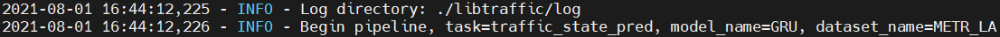
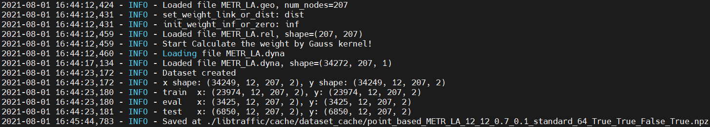
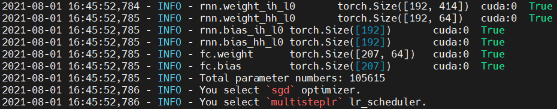
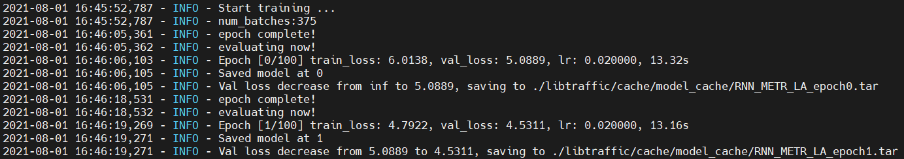

Run an existing model in LibCity¶
Here, we present how to run an existing model in LibCity.
Download a Dataset¶
LibCity provides 29 traffic datasets and presents their basic information on the website and document. To format various traffic datasets, we design and implement 6 atomic file types, which are able to characterize most forms of the input data required by different traffic prediction tasks. More details can be found in document.
We have already uploaded processed atomic files of datasets in network disks BaiduDisk with code 1231 or Google Drive. Users can simply download from network disks.
Take the METR_LA dataset as an example. We will get a folder named METR_LA after downloading it.
If you have not installed
LibCityyet, you can find the installation tutorial here.
If LibCity is installed successfully, we will get a folder named Bigscity-LibCity. We need to create a folder named raw_data in the project root directory for storing processed atomic files of datasets. Then, we move the downloaded folder METR_LA to the raw_data folder.
Configure Parameters¶
The experiment parameter configuration is determined by three aspects: the parameters passed by the command line, the user-defined configuration file, and the LibCity default configuration file. And the LibCity default configuration file includes configuration file of the data module, the executor module, the evaluator module, the model module.
Parameter Priority¶
command line parameters > user-defined parameters > default parameters of the model module > default parameters of other modules
LibCity Default Configuration File¶
The default configuration of the data module, execution module, evaluation module, and model module are located in the following four directories respectively:
libcity/config/datalibcity/config/executorlibcity/config/evaluatorlibcity/config/model
Take the GRU model as an example and see its default configuration in LibCity. First, open libcity/config/task_config.json, which records the list of models and datasets that can be supported by various tasks, as well as the default data module class name, execution module class name, and evaluation module class name of each model.
{
"traffic_state_pred": {
"allowed_model": [
..., "GRU", ...
],
"allowed_dataset": [
"METR_LA", ...
],
...
"GRU": {
"dataset_class": "TrafficStatePointDataset",
"executor": "TrafficStateExecutor",
"evaluator": "TrafficStateEvaluator"
},
...
}
}
We can know that the dataset class, executor, evaluator of the GRU model are TrafficStatePointDataset, DCRNNExecutor, TrafficStateEvaluator respectively.
Therefore, we can know default parameters of the data module from libcity/config/data/TrafficStatePointDataset.json.
{
"batch_size": 64,
"cache_dataset": true,
"num_workers": 0,
"pad_with_last_sample": true,
"train_rate": 0.7,
"eval_rate": 0.1,
"scaler": "none",
"load_external": false,
"normal_external": false,
"ext_scaler": "none",
"input_window": 12,
"output_window": 12,
"add_time_in_day": false,
"add_day_in_week": false
}
Default parameters of the executor module are in libcity/config/executor/TrafficStateExecutor.json.
{
"gpu": true,
"gpu_id": 0,
"max_epoch": 100,
"train_loss": "none",
"epoch": 0,
"learner": "adam",
"learning_rate": 0.01,
"weight_decay": 0,
"lr_epsilon": 1e-8,
...
}
We can also find default parameters of the evaluator module in libcity/config/evaluator/TrafficStateEvaluator.json.
{
"metrics": ["MAE", "MAPE", "MSE", "RMSE", "masked_MAE", "masked_MAPE", "masked_MSE", "masked_RMSE", "R2", "EVAR"],
"mode": "single"
}
Default parameters of the model module are located in libcity/config/model/traffic_state_pred/RNN.json, whose priority is higher than that of other 3 modules. Take the scalar parameter as an example, whose default value is standard in the default configuration file of the model module and none in the default configuration file of the data module. Therefore, its final default value is standard in LibTrafic.
{
"hidden_size": 64,
"num_layers": 1,
"dropout": 0,
"bidirectional": false,
"teacher_forcing_ratio": 0,
"scaler": "standard",
"load_external": true,
"normal_external": false,
"ext_scaler": "none",
"add_time_in_day": true,
"add_day_in_week": false,
...
}
User-defined Configuration File¶
In order to allow users to modify the default parameters of each module at will, LibCity allows user to reads the parameter configuration from the user-defined configuration file. The user-defined configuration file should meet the following format requirements:
The user-defined configuration file should be a JSON file;
The JSON file should store a dictionary, whose key is the parameter name, and the value is the parameter value to be modified;
The file should be placed in the project root directory, and its file name should be specified by
--config_file.
For example, we can write a following configuration file GRU_METR_LA.json in the project root directory.
{
"learner": "sgd"
}
Command Line Parameters¶
The script run_model.py used for training and evaluating a single model is provided in the root directory of the framework, and a series of command line parameters are provided to allow users to adjust the running parameter configuration.
When run the run_model.py, you must specify the following three parameters, namely task, dataset and model. For example, if we want to run the GRU model on the METR_LA dataset for the traffic state prediction task, we need to execute the following command:
python run_model.py --task traffic_state_pred --dataset METR_LA --model GRU
You can also use -h for more help information.
Run a Model¶
If you have already downloaded and put the dataset in the proper place, then only one command will help you run the model:
python run_model.py --task traffic_state_pred --dataset METR_LA --model GRU
If you want to pass the parameters through the command line and the user-defined configuration file, you can run the following command:
python run_model.py --task traffic_state_pred --dataset METR_LA --model GRU --learning_rate 0.02 --config_file GRU_METR_LA
The logger module would output the running information.
First, the logger module points out the log of running the model is saved in libcity/log and the pipeline of training the model begins.

Then, the executor module loads the atomic files and creates the dataset. It also splits the training set, the validation set, the test set and save the final dataset in libcity/cache/dataset_cache. If we want to run a model on the dataset with same parameters, these processes can be skipped.

The logger module will also output the model’s structure, the number of the model’s parameters, the optimizer and the learning rate scheduler. We can find that the optimizer has already become sgd , which is configured in the user-defined configuration file GRU_METR_LA.json.

Next, the executor module starts to train the model. After training for one epoch, the logger module will output losses on the training set and the validation set, the learning rate, the training time. We can find that the learning rate has already become 0.02, which was passed by the command line.

Finally, when the model training ends, the executor module will test the model’s performance on the test set and save the trained model and evaluation results in libcity/cache/model_cache/ and libcity/cache/evaluate_cache/ respectively.